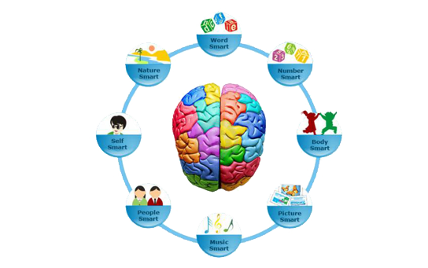

History
The study of intelligence began in Paris in the late 1890s with Alfred Binet, who developed a test designed to identify children with special educational needs.His approach of quantifying intelligence was then readily accepted in the United States and worldwide. Schools began testing children and adopting curricula that would help students improve their IQs.
In the 1970s, Howard Gardner, at Harvard University, started questioning the traditional definition of intelligence on which such tests were based. He worked with talented children and adults who had brain damage. He found that people had many other gifts and talents that weren't necessarily reflected in the traditional ideals of intelligence. He used a variety of sources – including neurophysiological research and studies with autistic people, geniuses, and protégés – to support his model that various parts of the brain provide different types of intelligence.
The original Multiple Intelligence theory was developed in 1983 and first published in his book, ‘Frames of Mind.’ The book strongly suggests that everybody has a different mind, and no two profiles of intelligence are the same. Therefore, the traditional concept of measuring intelligence by I.Q testing is far too restricted. From the 8 primary intelligences, an individual may excel in one, two or even three of these, but nobody’s good at them all.
“If a child is not learning the way you are teaching, then you must teach the way the child learns.